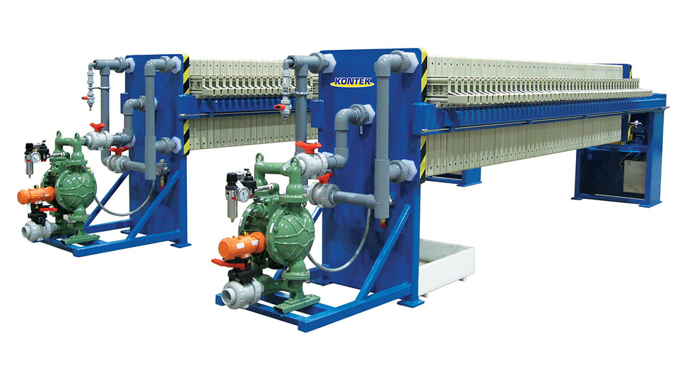
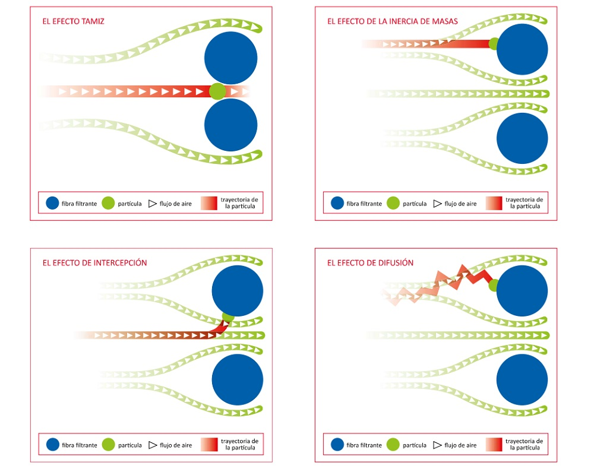
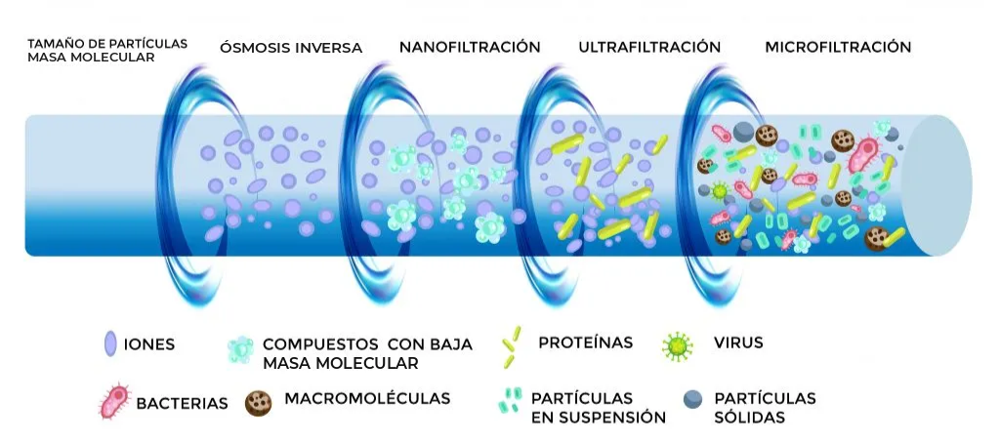

Filtración industrial y winterización
La barrera porosa que separa sólidos y gotas de un líquido: cómo retiene, cómo se modela con la ley de Darcy y cómo se escoge el equipo. Al final, la filtración de profundidad con cartuchos y placas, y el enfriado y filtrado de un aceite destilado.
La filtración es una de las operaciones de separación más antiguas y, a la vez, más extendidas de la industria de procesos: produce agua potable, recupera el cristal de un producto farmacéutico, deshidrata lodos y pule vinos, jarabes y aceites. Esta lectura recorre los mecanismos de retención de partículas, la teoría basada en la ley de Darcy, los grandes tipos de filtros industriales, los medios filtrantes y el ciclo de operación, con gráficas y calculadoras para dimensionar el equipo. Las secciones 7 y 8 llevan esas ideas a la filtración de profundidad con cartuchos y placas, y a la winterización: enfriar un aceite destilado y pasarlo por un filtro de profundidad para quitarle el agua y la turbidez.
- Distinguir la filtración de torta de la filtración de profundidad por el mecanismo que retiene la partícula
- Modelar el caudal de filtrado con la ley de Darcy y las resistencias en serie de la torta y del medio
- Obtener la resistencia específica de la torta y la del medio con un ensayo a presión constante, y escalar el área
- Explicar por qué una torta compresible limita el beneficio de subir la presión
- Seleccionar un tipo de filtro según la carga de sólidos, el objetivo y el modo de operación
- Leer la retención nominal y absoluta de un cartucho, y dimensionarlo con su caída de presión limpia y su vida
- Explicar qué separa la winterización de un aceite destilado y por qué no es un desencerado

Cuando un proceso necesita separar sólidos o gotas finas de un líquido, el diseño de la etapa sigue cinco pasos:
- Caracterizar la suspensión: concentración de sólidos, tamaño y naturaleza de las partículas, propiedades del líquido a la temperatura de filtración.
- Definir el objetivo: ¿clarificación del líquido o recuperación de sólidos? ¿Qué grado de separación se requiere?
- Seleccionar un tipo de filtro industrial adecuado para la aplicación y justificar la elección.
- Estimar preliminarmente el área de filtración requerida con datos de laboratorio (si se tuvieran) o valores típicos de la literatura para la resistencia específica de la torta α y la resistencia del medio Rm de sistemas similares. En un filtro de profundidad, con la resistencia del medio limpio y su capacidad, que publica el fabricante o mide un ensayo (sección 7).
- Describir el ciclo de operación del filtro seleccionado.
1. La filtración como barrera esencial
La filtración es una operación unitaria de separación mecánica o física diseñada para remover partículas sólidas suspendidas en un fluido (líquido o gas), mediante el paso de este a través de un medio poroso (el medio filtrante). Los sólidos son retenidos por el medio, mientras que el fluido clarificado, el filtrado o permeado, lo atraviesa.
Objetivos principales
Especialmente en el tratamiento de aguas, la filtración persigue tres objetivos no excluyentes:
- Clarificación del fluido: eliminar turbidez, partículas suspendidas y microorganismos (bacterias, protozoos) para producir agua potable segura o un efluente que cumpla la normativa ambiental.
- Recuperación de sólidos: en muchos contextos industriales, los sólidos retenidos son el producto de interés (cristales, pigmentos, biomasa).
- Pretratamiento: a menudo la filtración es una etapa previa a procesos de purificación más avanzados (desinfección UV, ósmosis inversa, adsorción).
2. Principios fundamentales
Mecanismos de retención de partículas
La forma en que las partículas son retenidas depende de su tamaño relativo al de los poros del medio y de las características del flujo. Rara vez actúa uno solo: varios mecanismos operan simultáneamente.

Tabla 1. Mecanismos de retención de partículas en filtración.
| Mecanismo | Cómo retiene la partícula | Régimen |
|---|---|---|
| Tamizado (straining) | Las partículas más grandes que los poros del medio son retenidas mecánicamente en la superficie. Es el mecanismo dominante en la filtración superficial y el responsable de la formación de la torta. | Superficial |
| Intercepción | Partículas más pequeñas que los poros quedan retenidas si tocan la superficie del medio al seguir las líneas de flujo del fluido. | En profundidad |
| Impacto inercial | Partículas con suficiente masa no logran seguir las líneas de flujo cuando estas se curvan alrededor del colector, y chocan contra él por su propia inercia. | En profundidad |
| Sedimentación | Partículas suficientemente densas sedimentan por gravedad y se depositan sobre los granos o fibras del medio dentro del lecho. | En profundidad |
| Adhesión / difusión | Partículas muy finas (submicrónicas) se mueven por difusión browniana y quedan adheridas al colector por fuerzas superficiales (van der Waals, electrostáticas). | En profundidad |
Filtración superficial vs. filtración en profundidad
Cuando el tamizado domina y los sólidos se acumulan sobre la cara del medio, hablamos de filtración superficial (o de torta). Cuando las partículas son más finas que los poros y quedan atrapadas dentro del lecho por intercepción, sedimentación y adhesión, hablamos de filtración en profundidad, típica de los lechos granulares, de los cartuchos y de las placas filtrantes. La sección 7 vuelve sobre ella.
Componentes clave de un sistema de filtración
- Suspensión de alimentación (prefiltrado): la mezcla sólido-fluido que ingresa al filtro.
- Medio filtrante: la barrera porosa que retiene los sólidos. Su elección es crítica.
- Torta de filtración (cake): la capa de sólidos acumulados sobre o dentro del medio. A medida que crece, la torta misma actúa como medio filtrante, a menudo más eficiente para partículas finas.
- Filtrado (o permeado): el fluido clarificado que ha atravesado el medio.
- Fuerza impulsora (Δ P): la diferencia de presión a través del filtro (medio + torta) que provoca el flujo. Puede generarse por gravedad, vacío o presión aplicada.
3. Teoría básica de la filtración
El flujo de un fluido a través de un medio poroso, la torta y el medio filtrante, se describe fundamentalmente por la ley de Darcy. Para la filtración, esta ley se modifica para incluir tanto la resistencia de la torta como la del medio. La ecuación general del caudal de filtrado es:
Donde:
- dV/dt: caudal volumétrico de filtrado (m³/s)
- A: área de filtración (m²); Δ P: caída de presión a través del filtro (Pa)
- μ: viscosidad dinámica del filtrado (Pa·s)
- Rc: resistencia de la torta; Rm: resistencia del medio filtrante (m⁻¹)
La resistencia de la torta no es constante: crece a medida que se acumulan sólidos. Se expresa como:
Donde:
- α: resistencia específica de la torta (m/kg), propiedad del sólido y de cómo se empaca
- W: masa total de sólidos secos en la torta (kg); cs: masa de sólidos secos por unidad de volumen de filtrado (kg/m³). En las diapositivas aparece w = W/A = cs V/A (kg/m²), la masa de torta por unidad de área, y por eso allí se escribe Rc=α w.
- V: volumen total de filtrado acumulado (m³)
Al sustituir Rc en la ecuación general, el caudal queda en función del volumen ya filtrado: a mayor V, mayor torta, mayor resistencia y menor caudal (a Δ P fijo).
Filtración a presión constante (Δ P = cte)
Se aplica una diferencia de presión constante y el caudal disminuye con el tiempo a medida que la torta crece. Integrando la ecuación general (con α y cs constantes) se obtiene:
Esta expresión tiene la forma de una recta y = mx + b si se grafica t/V (tiempo por unidad de volumen de filtrado) frente a V. De la pendiente m y la ordenada al origen b de esa recta se determinan experimentalmente α y Rm, el procedimiento estándar de un ensayo de filtración en laboratorio.
Linealización a presión constante: t/V vs. V
Mueva las propiedades de la torta y del medio para ver cómo cambian la pendiente y el intercepto de la recta de laboratorio (μ = 1,0×10⁻³ Pa·s, agua a 20 °C).
La pendiente sube con α, cs y μ, y baja con A² y Δ P. El intercepto no depende de la torta: cambia con Rm, μ, A y Δ P, pero no con α ni con cs. Una torta compresible haría que α (y por tanto m) cambie al variar Δ P.
En un ensayo piloto a Δ P = 1,5 bar (150 000 Pa) con agua (μ = 1,0×10⁻³ Pa·s), un área A = 1 m² y cs = 20 kg/m³, se grafica t/V vs. V y se obtiene una recta con pendiente m = 6,7×10³ s/m⁶ e intercepto b = 67 s/m³:
- α = (2 m A² Δ P)/(μ cs) = dfrac2(6,7×10³)(1)²(1,5×10⁵)(10⁻³)(20) ≈ 1,0×10¹¹ m/kg
- Rm = (b A Δ P)/(μ) = dfrac(67)(1)(1,5×10⁵)10⁻³ ≈ 1,0×10¹⁰ m⁻¹
Con α y Rm ya conocidos, se puede escalar a cualquier área y predecir el tiempo de filtración de la planta. En un ensayo de laboratorio el área es mucho menor (del orden de 10⁻³ m²); por eso conviene graficar t/(V/A) frente a V/A, como en las diapositivas: la recta deja de depender del área del equipo.
Filtración a caudal constante (dV/dt = Q = cte)
Se mantiene un caudal constante, por ejemplo con una bomba de desplazamiento positivo, y la presión aumenta con el tiempo a medida que crece la torta. Reordenando la ecuación general:
Como V = Q t a caudal constante, la presión necesaria aumenta linealmente con el tiempo (o con el volumen total filtrado) mientras la torta sea incompresible; si la torta se compacta, la resistencia específica crece con la presión y la curva se empina (siguiente apartado). Al llegar al límite del equipo la presión ya no puede subir. Si el filtro solo opera a caudal constante, ahí termina el ciclo; en el ciclo real de un filtro prensa se sigue a presión constante, con un caudal que cae, hasta un caudal mínimo económico (sección 6).
Compresibilidad de la torta
La resistencia específica α no siempre es constante. En muchas tortas, sobre todo las de partículas finas o flóculos deformables, α aumenta con la presión porque la torta se compacta. Se modela con una relación empírica:
donde α0 es una constante, con unidades de (m/kg)·Pa⁻ˢ cuando Δ P va en Pa, y s es el coeficiente de compresibilidad: s = 0 para tortas incompresibles; 0 < s < 1 para tortas compresibles. Cuando s es alto, subir Δ P deja de aumentar el caudal porque la torta se compacta y opone más resistencia, un compromiso central del diseño.
Explorador de compresibilidad: α = α0 (Δ P)ˢ
Observe cómo la resistencia específica responde a la presión según el coeficiente de compresibilidad s.
Con s = 0 la curva es horizontal (torta incompresible). A medida que s → 1, α crece casi proporcionalmente a la presión y el beneficio de subir Δ P se desvanece.
Dimensionamiento: caudal y tiempo de filtración
Con las propiedades de la torta y del medio ya estimadas, esta calculadora resuelve el problema de diseño directo: dado un volumen objetivo de filtrado y una presión de operación, ¿cuánto tarda la filtración y qué caudal entrega el filtro? El ciclo completo suma además el lavado, la descarga y el rearmado del equipo (sección 6).
Calculadora de filtración a presión constante
Modelo a Δ P constante con μ = 1,0×10⁻³ Pa·s: t = (μα cs)/(2A²Δ P)V² + (μ Rm)/(AΔ P)V. El caudal instantáneo es dV/dt = (AΔ P)/(μ(α cs V/A + Rm)).
4. Tipos de filtros industriales comunes
No existe un filtro universal: la elección depende de la concentración de sólidos, del objetivo (clarificar vs. recuperar), del modo de operación (continuo o por lotes) y del caudal. Explore las cuatro grandes familias en el visor interactivo (el tambor rotatorio aparece dos veces: en esquema y en la foto de un equipo real). Los cartuchos se estudian a fondo en la sección 7.
Dos de los equipos más utilizados en planta, el filtro prensa (por lotes) y el filtro de tambor rotatorio al vacío (continuo), se ven mejor en operación:
Ciclo de un filtro prensa de placas industrial: alimentación a presión, formación y compresión de la torta entre las placas y apertura para descargar los pasteles sólidos.
Filtro de tambor rotatorio al vacío (RVDF) en operación continua: cada punto de la superficie recorre las zonas de formación, lavado, secado y descarga en una sola revolución.
Filtración por membranas
Aunque es un tema extenso que se cubre por separado, conviene mencionar que la microfiltración (MF) y la ultrafiltración (UF) son tecnologías de filtración que usan membranas con tamaños de poro definidos para separar partículas muy finas, coloides, bacterias y virus. Junto con la nanofiltración (NF) y la ósmosis inversa (RO), son cada vez más comunes en el tratamiento avanzado de agua y efluentes. Lo que distingue a cada proceso es el tamaño de lo que retiene:
Tabla 2. Procesos de separación por membranas según el tamaño de poro o corte.
| Proceso | Tamaño de poro / corte | Retiene típicamente |
|---|---|---|
| Microfiltración (MF) | 0,1 - 10 µm | Partículas en suspensión, bacterias, protozoos |
| Ultrafiltración (UF) | 0,01 - 0,1 µm | Virus, coloides, macromoléculas, proteínas |
| Nanofiltración (NF) | ≈ 0,001 µm | Iones multivalentes, moléculas orgánicas pequeñas |
| Ósmosis inversa (RO) | < 0,001 µm (densa) | Iones monovalentes, sales disueltas |

5. Medios filtrantes
La elección del medio filtrante es crítica. Los criterios de selección son:
- Tamaño de las partículas a retener.
- Permeabilidad requerida.
- Resistencia química al fluido y a los agentes de limpieza.
- Resistencia mecánica y térmica.
- Costo y vida útil.
Tabla 3. Tipos de medios filtrantes y sus usos típicos.
| Tipo de medio | Ejemplos | Uso típico |
|---|---|---|
| Materiales granulares | Arena, antracita, granate, carbón activado granular | Filtración en profundidad (lechos granulares) |
| Telas tejidas | Algodón, polipropileno, poliéster, nylon | Filtros prensa y de tambor; el patrón de tejido define la apertura |
| Telas no tejidas (fieltros) | Fibras aglomeradas o entrelazadas | Filtración en profundidad o como soporte |
| Papeles filtrantes | Celulosa | Laboratorio o caudales pequeños |
| Membranas porosas | Poliméricas, cerámicas, metálicas | MF y UF, con tamaños de poro controlados |
| Metales sinterizados y mallas | Acero inoxidable poroso, bronce | Alta temperatura o servicios corrosivos |
Coadyuvantes de filtración (ayudas filtrantes)
Cuando la suspensión contiene partículas finas, gelatinosas o compresibles, que forman tortas casi impermeables y disparan la resistencia específica α, se recurre a coadyuvantes o ayudas filtrantes (filter aids): sólidos inertes, rígidos y muy porosos que se mezclan con el proceso para construir una torta más abierta y permeable. Los más comunes son la tierra de diatomeas (diatomita), la perlita expandida y la celulosa en polvo.
Se emplean de dos maneras, a menudo combinadas:
- Precapa (precoat): antes de filtrar la suspensión real se hace recircular una lechada del coadyuvante para depositar una capa fina y uniforme sobre el medio. Esta precapa protege el medio del taponamiento y facilita el desprendimiento de la torta al descargar.
- Dosificación continua (body feed): se añade coadyuvante a la suspensión de alimentación durante todo el ciclo, de modo que se incorpora a la torta y mantiene su porosidad, y por tanto un caudal alto, a medida que crece.
El coadyuvante reduce drásticamente α y prolonga el ciclo, pero contamina la torta: por eso solo se usa cuando el producto de interés es el filtrado clarificado (no los sólidos retenidos) o cuando la torta es un residuo a descartar. Existe un compromiso de costo: la dosis óptima minimiza el costo total (coadyuvante + tiempo de filtración).
Como el coadyuvante queda mezclado en la torta, su uso está descartado cuando se busca recuperar los sólidos puros (cristales, biomasa, pigmento). En ese caso conviene cambiar de equipo, ajustar Δ P (evitando la compactación de tortas compresibles) o pretratar la suspensión con floculación.
6. Ciclo de filtración y operación
Un ciclo de filtración típico para filtros de torta (por lotes) incluye cinco etapas:
- Filtración: formación y crecimiento de la torta hasta alcanzar una presión límite o un caudal mínimo. En un filtro prensa la bomba suele arrancar a caudal constante hasta la presión límite del equipo, y desde ahí se filtra a presión constante hasta que el caudal cae a un mínimo económico o la torta llena las cámaras.
- Lavado de la torta (opcional): pasar un líquido de lavado a través de la torta para desplazar el licor madre o recuperar solutos valiosos.
- Secado de la torta (opcional): pasar aire o gas a través de la torta para reducir su contenido de humedad.
- Descarga de la torta: remoción de la torta del filtro.
- Limpieza / preparación del filtro para el siguiente ciclo.
Para los filtros de lecho granular, el ciclo se compone de la etapa de filtración y la de retrolavado (backwashing): se invierte el flujo de agua a una velocidad suficiente para expandir el lecho y arrastrar los sólidos acumulados.
Desafíos clave en operación
Tabla 4. Desafíos clave en la operación de filtros industriales.
| Desafío | Descripción |
|---|---|
| Selección del filtro | Escoger el tipo y tamaño correcto según concentración de sólidos, objetivo y modo de operación define la eficiencia y el costo de toda la etapa. |
| Colmatación y ciclo | La torta crece y el caudal cae (o la presión sube). Fijar el punto de corte del ciclo, cuándo lavar, descargar o retrolavar, es clave para la productividad. |
| Tortas compresibles | Cuando α crece con la presión, subir Δ P deja de aumentar el caudal. Hay un óptimo de presión que no siempre es el máximo. |
| Retrolavado eficiente | En lechos granulares, dimensionar el caudal de retrolavado para expandir el lecho sin arrastrar el medio determina la recuperación y el consumo de agua. |
| Calidad del filtrado | Cumplir la turbidez o pureza objetivo, y de forma estable a lo largo del ciclo, suele exigir coagulación-floculación previa o un medio adecuado. |
| Manejo de la torta | La humedad final, el desprendimiento del medio y la disposición o valorización de la torta condicionan la elección del equipo y su automatización. |
Si el objetivo es clarificar el líquido (agua potable, efluente), interesa la calidad del filtrado y ciclos largos: lechos granulares o cartuchos. Si el objetivo es recuperar los sólidos (cristales, lodos valiosos), interesan la humedad y la lavabilidad de la torta: filtros prensa o de tambor al vacío. La misma operación unitaria, dos optimizaciones opuestas.
Lectura de referencia
Capítulo de texto base sobre operaciones de separación mecánica de sólidos de líquidos.
7. Filtración de profundidad: cartuchos y placas
Cuando el líquido trae muy pocos sólidos, por debajo de 0,1 % y a menudo en partes por millón, no se alcanza a formar una torta útil. El objetivo ya no es recuperar un sólido: es entregar un líquido limpio. La herramienta es un medio grueso, de varios milímetros de espesor, que atrapa las partículas en su interior por intercepción, impacto, sedimentación y adsorción (Tabla 1). Eso es la filtración de profundidad. La industria la usa para pulir agua de proceso, jarabes, vinos, cervezas, jugos, aceites comestibles, solventes y aceites esenciales, y para proteger un equipo sensible aguas abajo, como una membrana, una boquilla o una columna empacada.
Dos formatos: el cartucho y la placa
El cartucho es un cilindro hueco de medio filtrante que se monta en una carcasa a presión. El líquido entra por la cara exterior y sale por el núcleo. Los cartuchos de profundidad se fabrican con fibras de polipropileno sopladas o enrolladas en espiral, o con celulosa, en largos estándar de 10, 20, 30 y 40 pulgadas; el de la hoja de datos citada aquí mide 6,6 cm de diámetro. Muchos tienen una estructura de poro graduada: poros abiertos en la capa exterior, que retienen lo grueso, y poros finos hacia el núcleo, que hacen el pulido final. Así un mismo cartucho hace de prefiltro y de filtro final, y se carga en todo su espesor en lugar de taparse en la cara de entrada. Una carcasa industrial aloja uno o varias decenas de cartuchos en paralelo; el visor de la sección 4 muestra una con dos.
La placa filtrante (depth filter sheet) es una lámina de unos 4 mm hecha de fibras de celulosa con tierra de diatomeas y perlita, los mismos coadyuvantes de la sección 5, ya fijos en una matriz. Retiene por tres vías a la vez: tamizado en la cara, captura en profundidad y adsorción. Las placas se montan en filtros de placas y marcos, o en módulos lenticulares cerrados, y se venden por grados: unos gruesos que clarifican, otros finos que llegan a reducir microorganismos. Entre las aplicaciones que lista su fabricante están el pulido de vinos, la clarificación de jugos y jarabes y el pulido de aceite de oliva.
Tabla 5. Formatos de la filtración de profundidad.
| Formato | Medio típico | Montaje | Al final de su vida | Uso típico |
|---|---|---|---|---|
| Cartucho de profundidad | Polipropileno soplado o enrollado; celulosa | Carcasa con uno o varios cartuchos en paralelo | Se desecha al llegar a la caída de presión de cambio | Pulido final y protección de equipos, con caudales bajos y medios |
| Placa filtrante | Celulosa con tierra de diatomeas y perlita | Filtro de placas y marcos, abierto | Se cambian las placas; en servicios acuosos algunas admiten enjuagues que alargan su uso | Vinos, jugos, jarabes y aceites |
| Módulo lenticular | Las mismas placas, en discos apilados | Carcasa cerrada | Se cambia el módulo completo | Los de la placa, en un equipo cerrado que no gotea ni expone el líquido al ambiente |
Retención nominal y retención absoluta
Un cartucho se vende con un número en micrómetros, y ese número dice menos de lo que parece. Un medio de profundidad no tiene un poro único que corte en seco: atrapa una fracción de cada tamaño, alta para las partículas grandes y menor para las pequeñas. Por eso la industria declara la retención de dos maneras.
- Retención nominal: el tamaño del que el medio retiene una fracción que fija cada fabricante. En unos catálogos es la mitad; en otros, 85 % o más. Dos cartuchos «nominales de 5 µm» de marcas distintas pueden dejar pasar cantidades muy diferentes de partículas de 5 µm.
- Retención absoluta: el tamaño del que el medio retiene prácticamente todo, que en la práctica significa 99,9 % o más medido con un ensayo normalizado. La hoja de datos de un cartucho de profundidad de polipropileno, por ejemplo, declara retención absoluta superior a 99,9 % en grados entre 0,5 y 70 µm, medida con el ensayo ASTM F795.
La forma rigurosa de expresarlo es la razón beta, que compara cuántas partículas mayores que un tamaño x llegan al filtro y cuántas salen de él, y la eficiencia que se deriva de ella:
El ensayo de referencia es el de pasos múltiples (multi-pass) de la norma ISO 16889, nacido para los filtros de aceite hidráulico. Se recircula el fluido con un polvo de prueba normalizado, se cuentan las partículas antes y después del elemento hasta que la caída de presión llega a su valor terminal y se reporta la razón beta por tamaño. La norma aplica a elementos con una razón beta media de 75 o más.
Tabla 6. Razón beta y eficiencia de retención a un tamaño dado.
| Razón beta βx | Eficiencia Ex | De cada 1000 partículas mayores que x pasan |
|---|---|---|
| 2 | 50 % | 500 |
| 10 | 90 % | 100 |
| 75 | 98,7 % | 13 |
| 200 | 99,5 % | 5 |
| 1000 | 99,9 % | 1 |
| 5000 | 99,98 % | 0,2 |
Una retención «de 5 µm» solo se compara con otra si las dos se midieron con el mismo ensayo y la misma definición. Pida al proveedor la razón beta o la eficiencia al tamaño que le interesa, la prueba con que se midió y el fluido del ensayo.
Caída de presión limpia: Darcy sin torta
Un filtro de profundidad recién instalado no tiene torta. Toda su resistencia es la del medio limpio, y la ecuación general de la sección 3 queda con un solo término:
La caída de presión limpia crece en proporción al caudal por unidad de área, así que el área se escoge para que ΔP0 quede baja y le deje margen al medio para cargarse. Crece también en proporción a la viscosidad. Por eso las hojas de datos dan la curva de caudal contra caída de presión con agua a 20 °C y piden multiplicar la caída de presión por la viscosidad del líquido en centipoise, que es justo lo que dice esta ecuación. La consecuencia práctica: un líquido frío, más viscoso, necesita más área que el mismo líquido a temperatura ambiente.
La resistencia del medio limpio se calcula con la permeabilidad al agua que publica el fabricante. En una familia de placas filtrantes, la más abierta deja pasar 1700 L/(m²·min) de agua a 20 °C con 1 bar, y la más cerrada, 29 L/(m²·min). Con el flujo por unidad de área J = Q/A:
La placa abierta da Rm ≈ 3,5×10⁹ m⁻¹ y la cerrada Rm ≈ 2,1×10¹¹ m⁻¹: casi sesenta veces más resistencia, que es el precio de retener partículas más pequeñas. La misma hoja de datos recomienda no pasar de 525 L/(m²·h) en los grados finos, con 1,5 bar de caída de presión máxima, ni de 850 L/(m²·h) en los demás, con 3 bar. Esos límites están pensados para bebidas acuosas. Con un líquido más viscoso, la ecuación de ΔP0 dice que el caudal por área debe bajar en la misma proporción para conservar la misma caída de presión.
La curva del fabricante de un cartucho de 10 pulgadas marca 0,10 bar con agua a 20 °C y 10 L/min (lectura supuesta para el ejemplo). Se quieren filtrar 30 L/min de un líquido de 4 mPa·s a la temperatura de filtración, con una caída de presión limpia que no pase de 0,20 bar.
- Con el líquido, a 10 L/min por cartucho: ΔP0 = 0,10 × 4 = 0,40 bar, el doble de lo admisible.
- Como ΔP0 es proporcional al caudal, cada cartucho admite 10 × 0,20/0,40 = 5 L/min.
- Hacen falta 30/5 = 6 cartuchos de 10 pulgadas, o dos de 30 pulgadas, porque el caudal admisible crece con el largo.
Con agua habrían bastado tres cartuchos de 10 pulgadas a 10 L/min cada uno. La viscosidad duplicó el filtro.
Ensayos de capacidad y vida del filtro
El área limpia dice cuánto filtro hace falta en el primer minuto. Lo que decide el costo es cuánto líquido pasa antes de que el medio se llene: la capacidad del medio, o la vida del filtro si se expresa en horas de servicio. Esa cifra no sale de una tabla, porque depende de lo que trae el líquido. Se mide con el líquido real, en un disco o una cápsula pequeña del mismo medio, con uno de dos ensayos.
- A presión constante. Se registra el volumen filtrado contra el tiempo, como en el ensayo de la sección 3. Si las partículas se depositan en las paredes de los poros y los van estrechando, que es el bloqueo estándar, la gráfica de t/V contra t es una recta. Su pendiente es el inverso de Vmax, el volumen que el área ensayada alcanzaría a filtrar antes de taparse del todo, y su intercepto, el inverso del caudal inicial Q0. En la industria farmacéutica este procedimiento se conoce como método Vmax.
- A caudal constante. Se bombea a caudal fijo y se registra la caída de presión contra el volumen hasta llegar a la presión terminal. El volumen por unidad de área que pasó hasta ese punto es la capacidad del medio, y se escala sin modelo: el área de planta es el volumen que debe pasar entre dos cambios dividido por esa capacidad, con un factor de seguridad. Como no supone ningún mecanismo de taponamiento, es el ensayo que se prefiere para los filtros de profundidad, que se tapan de formas complejas.
La primera ecuación es la recta del ensayo a presión constante. La segunda es el mismo modelo de bloqueo estándar a caudal constante: la caída de presión arranca en ΔP0 y se dispara a medida que el volumen filtrado se acerca a Vmax. Las dos salen de las leyes de bloqueo de Hermia, que reúnen en una sola familia los cuatro modos clásicos en que un medio pierde caudal.
Tabla 7. Las cuatro leyes de bloqueo de Hermia, a presión constante.
| Mecanismo | Qué le pasa al medio | Recta del ensayo |
|---|---|---|
| Bloqueo completo | Cada partícula sella un poro de la superficie | Q contra V |
| Bloqueo estándar | Las partículas se depositan en las paredes y estrechan los poros por dentro | t/V contra t |
| Bloqueo intermedio | Las partículas sellan poros o se apilan sobre otras ya retenidas | 1/Q contra t |
| Torta | Las partículas forman una capa sobre la cara del medio | t/V contra V (sección 3) |
Una planta de bebidas quiere pulir lotes de 2000 L de un jarabe en 2 h. En el laboratorio filtra el jarabe a presión constante por un disco del medio de 15 cm² (0,0015 m²) y registra (datos sintéticos para el ejemplo):
| t (min) | 5 | 10 | 20 | 30 | 45 |
|---|---|---|---|---|---|
| V (mL) | 64 | 113 | 180 | 225 | 270 |
| t/V (min/mL) | 0,0781 | 0,0885 | 0,1111 | 0,1333 | 0,1667 |
- La regresión de t/V contra t da pendiente 2,22×10⁻³ mL⁻¹ e intercepto 0,0667 min/mL. Entonces Vmax = 450 mL y Q0 = 15,0 mL/min.
- Por unidad de área: vmax = 0,450/0,0015 = 300 L/m² y j0 = 0,015/0,0015 = 10,0 L/(m²·min).
- Despejando la recta, lo que filtra cada metro cuadrado en 120 min es v = j0 t / (1 + j0 t / vmax) = 1200/5 = 240 L/m².
- Área: A = 2000/240 = 8,3 m²; con un factor de seguridad de 1,5, 12,5 m².
Note el límite: aunque el lote tuviera todo el tiempo del mundo, el área no podría bajar de 2000/300 = 6,7 m², porque cada metro cuadrado se tapa al pasar 300 L. Cuando la capacidad manda, el área se dimensiona por el volumen del lote y no por el caudal.
Caída de presión y cambio de cartucho
Mientras el medio se carga, la caída de presión sube. El cartucho se cambia cuando llega a la caída de presión de cambio que recomienda el fabricante, no cuando el filtrado se ve sucio. En el cartucho de profundidad de polipropileno citado esa cifra es 2,4 bar, con una condición: no pasar de la caída de presión máxima, que baja con la temperatura, de 5,2 bar a 20 °C a solo 1,0 bar a 82 °C. Más allá de esos límites el medio se deforma, puede soltar lo que había retenido y el núcleo arriesga ceder. En la operación esto se traduce en unas pocas reglas:
- Cada carcasa lleva un indicador de presión diferencial, o un manómetro antes y otro después; en el P&ID aparece como un PDI.
- Cuando el proceso no puede parar para cambiar cartuchos, se montan dos carcasas en paralelo, una en servicio y otra de reserva (arreglo dúplex).
- La carcasa se purga de aire al arrancar y se drena antes de abrirla.
- El cartucho de profundidad no se retrolava como un lecho granular: se desecha y se reemplaza.
La calculadora reúne la sección: el área fija la caída de presión limpia, la capacidad del medio fija cuánto tarda en llegar a la de cambio, y el modelo de bloqueo estándar las une.
Filtro de profundidad: caída de presión limpia y vida del medio
Caudal constante, con el modelo de bloqueo estándar: ΔP = ΔP0/(1 − V/Vmax)², con Vmax = vmax A. La resistencia del medio sale de su permeabilidad al agua a 20 °C y 1 bar.
Los valores iniciales son ilustrativos, salvo la viscosidad, que es la del d-limoneno a 5 °C (sección 8). La capacidad vmax depende de lo que trae el líquido y se mide con un ensayo; la permeabilidad y la caída de presión de cambio salen de la hoja de datos del medio. Duplique el área y verá que la vida del filtro crece más del doble: baja ΔP0 y sube Vmax a la vez.
8. Winterización: enfriar y filtrar un aceite
La palabra winterización viene de la industria de los aceites comestibles. El aceite de algodón guardado en tanques a la intemperie se enturbiaba en invierno, porque sus triglicéridos de punto de fusión alto cristalizaban con el frío. Los refinadores aprendieron a enfriarlo a propósito, dejar crecer los cristales y filtrarlos antes de envasar, para que el aceite no se enturbiara después en la nevera de quien lo compra. Hoy el nombre se usa para cualquier operación que enfría un aceite y separa lo que el frío saca de solución.
En este curso, y en buena parte de la industria de aceites esenciales y sabores, la palabra nombra una operación más sencilla: enfriar un aceite destilado y pasarlo por un filtro de profundidad para quitarle el agua y la turbidez. Es la que se estudia aquí.
Por qué un aceite destilado sale con agua
En una destilación por arrastre con vapor el aceite y el agua condensan juntos y se separan por densidad en un decantador, el florentino de la Lectura 11. El aceite que sale por arriba no está seco. Lleva agua de dos formas:
- Disuelta. El aceite sale saturado de agua a la temperatura del decantador. La solubilidad del agua en un aceite terpénico es baja, pero no es cero, y baja con la temperatura.
- En gotas finas. Parte del agua viaja en gotas de pocos micrómetros, que se forman cuando la mezcla saturada se enfría en el condensador y cuando pasa por bombas y válvulas. Son las que enturbian el aceite, y el decantador no alcanza a separarlas.
La ley de Stokes, que la Lectura 11 desarrolla para el florentino, explica por qué esas gotas no se van solas. La velocidad con que cae una gota de diámetro d es:
Para el aceite se usan las propiedades del d-limoneno, su componente principal. A 5 °C su densidad es 856,8 kg/m³ y su viscosidad, 1,15 mPa·s; las dos salen de las correlaciones de Clará y sus colegas, que midieron entre 10 y 80 °C, así que a 5 °C son una extrapolación corta (a 10 °C midieron 1,07 mPa·s). Con el agua a la misma temperatura, la diferencia de densidad es 143 kg/m³.
Tabla 8. Gotas de agua que caen en d-limoneno a 5 °C, con Δρ = 143 kg/m³ y μ = 1,15 mPa·s.
| Diámetro de la gota | Velocidad de caída | Tiempo para caer 0,5 m |
|---|---|---|
| 100 µm | 2,4 m/h | 12 min |
| 20 µm | 9,7 cm/h | 5,1 h |
| 5 µm | 6,1 mm/h | 3,4 días |
| 2 µm | 1,0 mm/h | 3 semanas |
Las gotas grandes salen en el decantador; las de pocos micrómetros tardan días o semanas, que no es un tiempo razonable para un lote. Hay que atraparlas con un medio.
Lo que hace el frío
Enfriar el aceite a 5-10 °C tiene un efecto que ayuda y dos que estorban, y el diseño se decide en el balance.
- Ayuda: el agua disuelta sale de solución, porque su solubilidad baja con la temperatura. Lo que a temperatura ambiente estaba disuelto, y habría atravesado cualquier filtro, se vuelve gotas que el medio puede retener. Lo mismo pasa con lo poco pesado que haya arrastrado el vapor y que en caliente seguía disuelto.
- Estorba: la viscosidad del aceite sube. En el d-limoneno pasa de 0,93 mPa·s a 20 °C a 1,15 mPa·s a 5 °C, cerca de una cuarta parte más. En esa proporción sube la caída de presión del filtro, según la ecuación de ΔP0, y bajan las velocidades de la Tabla 8.
- Estorba: bajo 0 °C el agua libre se congela. El hielo tapa el medio y se funde después aguas abajo, así que no se enfría por debajo de unos pocos grados.
Una regla se deriva de lo anterior: el aceite se filtra frío. Si se calienta antes de pasar por el filtro, el agua que el frío sacó de solución vuelve a disolverse y atraviesa el medio.
La secuencia de la operación
Deslice de lado para ver el esquema completo.
- Recibir el aceite del decantador en un tanque enchaquetado.
- Enfriar a 5-10 °C con agua helada o una solución de glicol por la chaqueta, con agitación suave para que todo el volumen se enfríe parejo. La Lectura 08 trata la agitación de un tanque y la Lectura 10, la transferencia de calor.
- Reposar en frío para que las gotas que el enfriamiento sacó de solución crezcan, se junten y bajen; purgar el agua libre por el fondo.
- Filtrar en frío por un medio de profundidad. Los medios de celulosa adsorben las trazas de agua en sus fibras y retienen la turbidez y las partículas finas.
- Cambiar el medio al llegar a la caída de presión de cambio, o antes si el filtrado vuelve a salir turbio: la celulosa tiene una capacidad finita para el agua, y saturada la deja pasar.
Es una operación por lotes. El aceite se acumula, se enfría y se filtra, y la etapa siguiente se alimenta desde un tanque pulmón.
Con las herramientas de la sección 7, en dos cuentas. La primera es hidráulica: la viscosidad del aceite a la temperatura de filtración, el caudal con que se quiere pasar cada lote y la resistencia del medio limpio dan el área para una caída de presión limpia baja. Use la viscosidad a la temperatura de filtración, no a 25 °C. Con un aceite poco viscoso esa cuenta pide poco: a 50 L/h de limoneno a 5 °C, aun la placa más cerrada de la sección 7 se queda en 0,1 bar con un tercio de metro cuadrado. La segunda cuenta suele mandar: la capacidad del medio para retener agua, medida con un ensayo o tomada del fabricante, frente al agua que trae el aceite en cada lote. Esa comparación dice cuánto medio hace falta y cada cuánto se cambia, y con el tiempo de lote fija el ciclo de operación.
No es un desencerado
Los aceites cítricos prensados en frío se obtienen exprimiendo la cáscara, sin destilar, y arrastran lo que el aceite de la cáscara tiene disuelto, incluidos componentes no volátiles que la industria llama genéricamente «ceras». En el almacenamiento esas ceras precipitan y dejan sedimento en el envase. El desencerado (dewaxing, que algunas fuentes también llaman winterización) enfría el aceite muy por debajo de su temperatura normal de almacenamiento, lo mantiene en frío para que las ceras precipiten y las separa por centrifugación, por sedimentación en tanque, con tierra de diatomeas o con filtros de profundidad. Aun así, una fracción soluble de las ceras se queda en el aceite, y algunos compuestos, como ciertos epóxidos de psoralenos, escapan al frío y precipitan semanas o años después.
La razón de fondo para no confundir las dos operaciones es la volatilidad. Los componentes de las ceras son muy poco volátiles: la destilación con vapor arrastra solo pequeñas cantidades de ellos, y algunos aceites destilados se enfrían justamente para quitárselas y mejorar su claridad. El aceite destilado trae, entonces, poca cera, mucho menos que uno prensado, y lo que el frío y el filtro le quitan es sobre todo agua, porque nace mezclado con ella.
Tabla 9. Tres operaciones que en la literatura aparecen con el nombre de winterización.
| Aceite destilado (este curso) | Aceite cítrico prensado en frío | Aceite comestible | |
|---|---|---|---|
| Qué se separa | Agua disuelta y en gotas finas, turbidez y partículas | Ceras y otros no volátiles que precipitan con el frío | Triglicéridos de punto de fusión alto |
| De dónde viene | Del condensado del arrastre, a través del decantador | De la cáscara, disuelto durante el prensado | Del propio aceite |
| Qué hace el frío | Saca el agua de solución | Hace precipitar las ceras | Cristaliza los triglicéridos más saturados |
| Cómo se separa | Purga del agua libre y filtro de profundidad de celulosa | Centrífuga, sedimentación, tierra de diatomeas o filtro de profundidad | Filtración de los cristales, a menudo con coadyuvante |
| ¿Lo necesita un aceite destilado? | Sí: el agua llega con él | Pocas veces: el vapor arrastra muy poca cera | No aplica |
Si encuentra «winterización» con temperaturas bajo cero y largos reposos en frío, probablemente está leyendo sobre desencerado o sobre aceites comestibles. Esos tiempos y esas temperaturas no son los de enfriar y filtrar un aceite destilado.
9. Para cerrar
Filtrar es administrar una resistencia. En la filtración de torta la resistencia crece porque la torta engruesa, y el diseño juega con la presión, el área y el ciclo. En la de profundidad la resistencia crece porque el medio se llena por dentro, y el diseño juega con el área, la viscosidad y la capacidad del medio. La winterización de un aceite destilado es un caso de la segunda: el frío saca el agua de solución y un medio de celulosa la retiene, siempre que el aceite llegue frío al filtro.
En la planta de aceite esencial la filtración aparece en la winterización, entre el decantador florentino y la rectificación al vacío. La Bitácora 3 pide el tipo de filtro, su área por la caída de presión limpia (la resistencia del medio y el caudal de aceite), la cantidad de medio por su capacidad para el agua que trae el aceite y el ciclo de operación; la Bitácora 2, la agitación del tanque de enfriamiento. Los datos son de su equipo: la viscosidad de su aceite a la temperatura de filtración, el caudal por lote, el medio escogido y su capacidad. Esta lectura le da el método.
Compruebe que puede responder estas preguntas sin volver al texto:
- ¿Qué mecanismo retiene las partículas en la filtración de torta, y cuáles las retienen en la filtración de profundidad?
- En un ensayo a presión constante, ¿qué parámetro sale de la pendiente de t/V contra V y cuál del intercepto? ¿Cuál de los dos no depende de la torta?
- ¿Por qué subir la presión rinde poco cuando la torta tiene un coeficiente de compresibilidad cercano a 1?
- ¿Cuándo conviene una ayuda filtrante y cuándo está descartada?
- ¿Qué diferencia una retención nominal de una absoluta, y qué eficiencia corresponde a βx = 1000?
- Si un cartucho filtra un líquido de 4 mPa·s en lugar de agua, al mismo caudal, ¿cuánto cambia su caída de presión limpia?
- ¿Qué mide un ensayo a caudal constante en un filtro de profundidad, y cómo se pasa de ese resultado al área de planta?
- ¿Qué separa la winterización de un aceite destilado, por qué se filtra en frío y por qué no es un desencerado?
10. Bibliografía recomendada
Pase el cursor por cualquier marcador del texto, o tóquelo, para ver la fuente sin perder el hilo.
- McCabe, W. L., Smith, J. C., & Harriott, P. (2005). Unit Operations of Chemical Engineering (7th ed.). McGraw-Hill. (Capítulo 29: Mechanical Separations).
- Perry, R. H., & Green, D. W. (Eds.). (2019). Perry's Chemical Engineers' Handbook (9th ed.). McGraw-Hill. (Sección 18: Liquid-Solid Operations and Equipment. Filtración).
- Geankoplis, C. J. (2003). Transport Processes and Separation Process Principles (4th ed.). Prentice Hall. (Capítulo 14: Mechanical-Physical Separation Processes. Filtración).
- Svarovsky, L. (Ed.). (2000). Solid-Liquid Separation (4th ed.). Butterworth-Heinemann. Referencia muy completa y especializada en separación sólido-líquido.
- Pall Corporation. (2010). Poly-Fine ARD Series filter cartridges (Data Sheet 1230-4C). Hoja de datos de un cartucho de profundidad de polipropileno: retención, caída de presión de cambio y corrección por viscosidad. pall.com
- Pall Corporation. (2011). Seitz K Series depth filter sheets (Data Sheet FBKENa). Composición, permeabilidad al agua, caudales recomendados y aplicaciones de las placas filtrantes. pall.com
- Pall Corporation. (s.f.). How to remove water from oil-based flavor. Recuperado el 23 de octubre de 2026, de pall.com
- Pall Corporation. (s.f.). Citrus oil wax separation. Recuperado el 23 de octubre de 2026, de pall.com
- Radford, T., & Olansky, A. S. (1994). Process for dewaxing citrus oils (Patente US 5362714). The Coca-Cola Company. patents.google.com
- Hermia, J. (1982). Constant pressure blocking filtration laws: Application to power-law non-Newtonian fluids. Transactions of the Institution of Chemical Engineers, 60, 183-187.
- International Organization for Standardization. (2022). ISO 16889:2022. Hydraulic fluid power. Filters. Multi-pass method for evaluating filtration performance of a filter element. ISO.
- Shahidi, F. (Ed.). (2005). Bailey's Industrial Oil and Fat Products (6th ed.). Wiley. Referencia de la refinación de aceites comestibles, incluida su winterización.
- Clará, R. A., Gómez Marigliano, A. C., & Sólimo, H. N. (2009). Density, viscosity, and refractive index in the range (283.15 to 353.15) K and vapor pressure of α-pinene, d-limonene, (±)-linalool, and citral over the pressure range 1.0 kPa atmospheric pressure. Journal of Chemical & Engineering Data, 54(3), 1087-1090. doi.org/10.1021/je8007414
- Başer, K. H. C., & Buchbauer, G. (Eds.). (2010). Handbook of Essential Oils: Science, Technology, and Applications. CRC Press. (p. 112, en el capítulo 4 de E. Schmidt, sobre lo poco volátil que arrastra el vapor; p. 188, en el capítulo 7 de T. B. Adams y S. V. Taylor, sobre los aceites destilados que se enfrían para quitarles ceras).